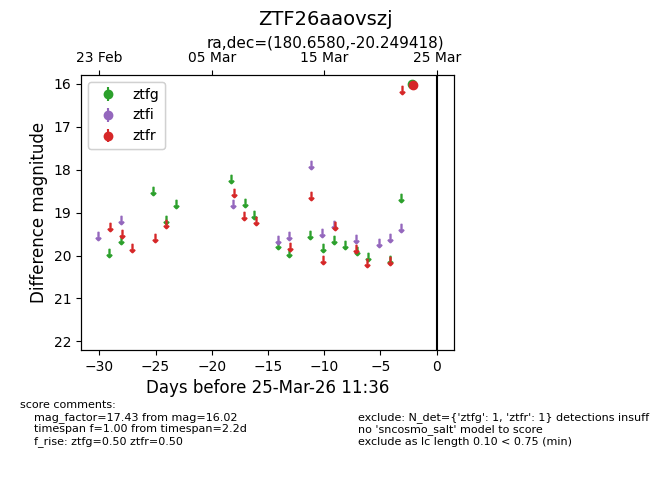
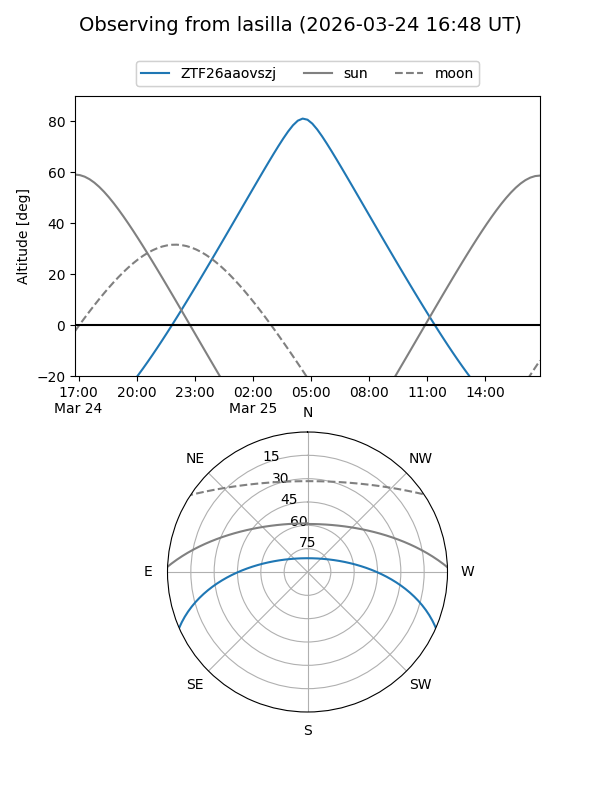
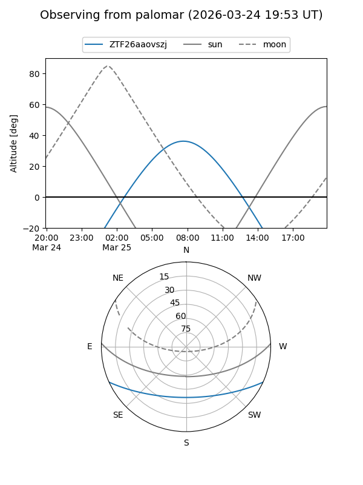

ZTF26aaovszj
Target ZTF26aaovszj at 2026-03-25 11:39
Aliases and brokers:
FINK: link
Lasair: link
ALeRCE: link
alt names
ZTF26aaovszj (ztf,fink_ztf)
Coordinates:
equatorial (ra, dec) = 180.6580,-20.24942
equatorial (HMS+DMS) = 12:02:37.93,-20:14:57.91
galactic (l, b) = (287.6591,+41.17043)
Flags:
Photometry:
last ztfg=15.99, ztfr=16.02
1 ztfg, 1 ztfr detections
Lightcurve

Visibility


Additional plots